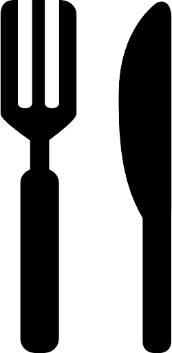
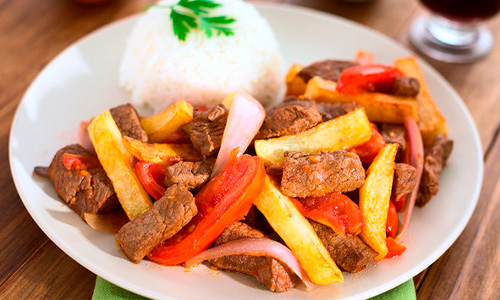
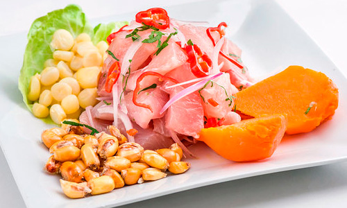
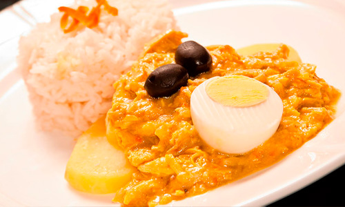
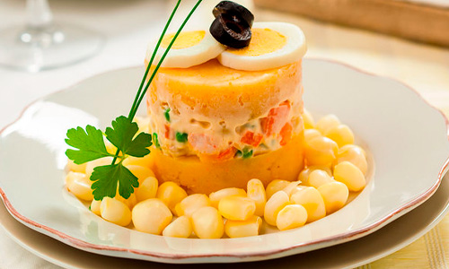
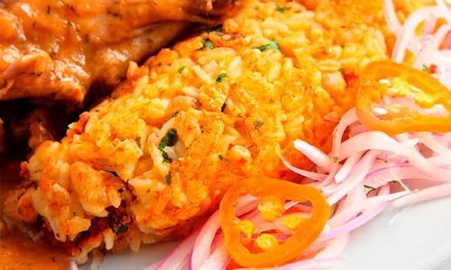
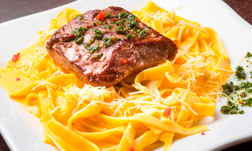

Desayuno
Empieza bien el día con nuestro platos
de 7:30 a 11:00

Almuerzo
Te esperamos para que mejores tu tarde
de 12:00 a 15:00
Cena
Culmina el día de una manera espectacular
de 19:00 a 23:00
Nuestros Platos

Lomo Saltado

Ceviche

Aji De Gallina

Arroz Con Pollo

Causa

Tacu Tacu

Tallarines
Nuestra cocina es saludable y solo usamos productos nacionales. Nuestro trabajo es innovar
constantemente nuestros productos y recetas sin dejar de respetar los productos de
temporada y la naturaleza
En nuestro restaurante siempre encontrarás comida saludable. No dudes en visitarnos para disfrutar, podrás encontrar bebidas nutritivas y deliciosos postres para satisfacer tus antojos de algo dulce. Todos los días podrás probar nuestro especial del día.
En nuestro restaurante siempre encontrarás comida saludable. No dudes en visitarnos para disfrutar, podrás encontrar bebidas nutritivas y deliciosos postres para satisfacer tus antojos de algo dulce. Todos los días podrás probar nuestro especial del día.